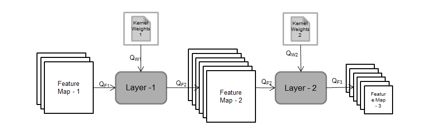
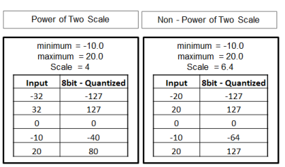
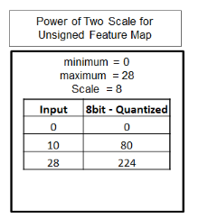
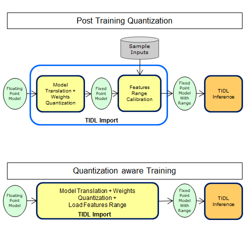

Introduction
- A DNN inference engine using Floating point operations suffer power and cost efficiency. These floating point operations can be substituted with fixed point operations (8 or 16 bit) without losing much inference accuracy.
- TIDL-RT provides state-of-art Post Training Quantization (PTQ) and calibration algorithms as explained here (refer Best Accuracy section).
- TIDL-RT supports 8-bit, 16-bit and mixed precision inference. It is recommended to use 8-bit inference mode for best execution time and use mixed-precision and/or 16-bit if you observe any accuracy gap with 8-bit inference
In TIDL, the scales for parameters and activations are selected separately based on their range (Minimum and Maximum values). The scales are passed through layer processing from producer layer to consumer layer till the last layer. All the activations and parameters are maintained in fixed point representation and have a floating point scale associated with them. At the end user can convert final output tensors to floating point by dividing each element in the tensors by their corresponding floating point scale.

TIDL - Basic Quantization
There are multiple schemes to select the scale for a given tensor based on the expected range. The image below shows two schemes for selecting the scale for a signed tensor:

TIDL - Scale Selection Schemes
If the tensor data is unsigned (for example output of ReLU layer), then the entire range can be used for representing positive range only. This would help in achieving lesser quantization error.

TIDL - Scale Selection Schemes
TIDL SW supports:
- Both Power of two scales (TIDL_QuantStyleP2Dynamic) and Non-power two scales (TIDL_QuantStyleNP2Fixed) for Parameters/Weights. User can configure one of them.
- Power of two scales for Activation/Feature maps.
TIDL Layers which Requires Parameter Quantization
- Convolution Layer
- De-convolution Layer
- Inner-Product Layer
- Batch Normalization (Scale/Mul, Bias/Add, PReLU)
Quantization Options
TIDL provides the following quantization options to the user:
- A. Post Training Quantization (PTQ)
- B. Guidelines For Training To Get Best Accuracy With Quantization
- C. Quantization Aware Training (QAT)
We recommend to use option 'A' for the network first, if the quantization accuracy loss is not acceptable, then you can try option 'B'. If the result with 'B' is also not acceptable, then the user can use option 'C'. This solution shall work most of the time. The only drawback of this solution is that it would need additional effort from the user to re-train the network.

TIDL - Quantization Options
A. Post Training Quantization (PTQ)
- Training free Quantization – Most preferred option
- PTQ has the following options available:
- Simple Calibration
- Advanced Calibration
- Per-channel Weight Quantization for Depthwise Convolution Layers
- Mixed Precision
- Future/Planned Improvements
A.1. Simple Calibration
- This option is the default option of TIDL-RT
- Supports Power of 2 and Non Power of 2 scales for parameters
- Supports only power of 2 scales for feature maps
- Scale selected based on min and max values in the given layer
- Range for each feature maps are calibrated offline with few sample inputs
- Calibrated range (Min and Mix) Values are used for Quantizing feature maps in target during inference (real time)
- Observed accuracy drop less than 1% w.r.t floating point for many networks with 8-bits
- For example models such as Resnets, SqueezeNet, VGG, etc ( especially models which don't use Depthwise convolution layers)
A.2. Advanced Calibration
- This feature should be used if 8 bit accuracy is not in acceptable range with simple calibration as described above. There are multiple options which are available for this and user can incrementally try these options to see if accuracy is in acceptable range. Following are the various options available:
A.2.1. Histogram based activation range collection:
- To enable this feature user needs to set calibrationOption to 1 in the TIDL-RT import config file. Typically no other parameter is required to be set as default parameters works for most of the cases.
- This feature uses the histogram of feature map activation ranges to remove outliers which can affect the overall range. This helps in reducing the accuracy loss due to quantization.
- User can also experiment with following parameters related to this option if required:
- percentileActRangeShrink: This parameter is the percentile of the total number of elements in an activation tensor which need to be discarded from both sides of the activation's statistical distribution. If input is unsigned then this is applied to only one side of the activation's statistical distribution. For example percentileRangeShrink = 0.01, means to discard 1/10000 elements from one or both sides of the activation's statistical distribution.
A.2.2. Advanced Bias calibration:
- To enable this feature user needs to only set calibrationOption to 7 in TIDL-RT import config file. Typically no other parameter is required to be set as default parameters works for most of the cases. It is observed that using 50 or more number of images gives considerable accuracy boost.
- This feature applies a clipping to the weights and update the bias to compensate the DC errors introduced because of quantization. To understand details of this feature please refer the following Link
- User can also experiment with following parameters related to this option if required:
- biasCalibrationFactor: Each iteration the difference between the per-channel floating point mean and quantized mean output of activation range is used to update the bias. This parameter is used to indicate the contribution of this difference which should be used to update the bias. User can always use the default value
- biasCalibrationIterations: Number of iteration to be used for bias calibration.
- numFramesBiasCalibration: Number of input frames to be used for bias calibration
A.3. Per-channel Weight Quantization for Depthwise Convolution Layers:
- To enable this feature user needs to set calibrationOption to 13 in import config file. Typically no other parameter is required to be set as default parameters works for most of the cases.
- This feature enables per-channel quantization for weights for depthwise separable convolution layers in the network. Currently this feature is only supported with power of 2 quantization scheme i.e. quantizationStyle = 3. Even if user sets it to anything else internally this will be converted to power of 2.
A.4. Mixed Precision :
- This feature allows user to run only certain layers in higher precision ( i.e. in 16 bit) whereas rest of the network runs in 8 bit. As the precision keeps changing throughout the network this feature is called as Mixed Precision.
- User can use this feature using following ways :
- By setting calibrationOption for some pre-defined configurations. Following are the details of these configuration options :
- Mixed precision for all depthwise convolution layers ( calibrationOption = 16) : When this option is enabled all the depthwise convolution layers weights will be quantized to 16 bits.
- First layer processing in 16 bit ( calibrationOption = 32) : When this option is enabled the first layer's weight of the network will be quantized to 16 bits.
- If user is already using some calibrationOption then they can do a bit wise "OR" with the above two options and provide during import.
- Manually selecting layers for mixed precision :
- User can manually specify the layers which they want to run in higher precision ( i.e. in 16 bits) using outputFeature16bitNamesList and params16bitNamesList parameters of import configuration. Please refer here to understand the details of these parameters. User has option to either increase only parameters/weights precision to 16 bit or to have both activation and parameters of a particular layer in 16 bit.
- TIDL allows change of precision for certain set of layers ( mentioned below ). For layers not mentioned in this list, you cannot change the precision. This means that the layers which support change in precision can have input, output and parameters in different precision. Whereas the layers which do not support change in precision will always have input, output and parameters in same precision. The impact of this is that for a particular layer which doesn't support change in precision, the input, output and parameter's precision will be automatically determined based on the producer or consumer of the layer. For example, for the concat layer, which doesn't support change in precision, if the output is in 16 bit because of its consumer layer or because the user requested for the same, then it will change all its input to be in 16 bits as well.
- If for a given layer output is already a floating point output (e.g. Softmax, DetectionOutputLayer etc) then increasing activation precision has no impact.
- Few Points to Note:
- Currently following layers support change in precision and all the other layers cannot have input and output in different precision i.e. their precision is determined by their producer/consumer and both input and output will be in the same precision :
- TIDL_ConvolutionLayer ( Except TIDL_BatchToSpaceLayer and TIDL_SpaceToBatchLayer)
- TIDL_BatchNormLayer
- TIDL_PoolingLayer ( Excluding Max pooling layer)
- TIDL_EltWiseLayer
- In future release we will have option to enable automatic selection of each layer's precision.
A.5 Future/Planned Improvements
- The following options are not supported in current release but are planned for future TIDL releases:
- Mixed Precision – Automatic selection of layers for mixed precision
- Per-channel weight quantization with non-power of 2 quantizationStyle
B. Guidelines For Training To Get Best Accuracy With Quantization
- For best accuracy with post training quantization, we recommend that the training uses sufficient amount of regularization / weight decay. Regularization / weight decay ensures that the weights, biases and other parameters (if any) are small and compact - this is good for quantization. These features are supported in most of the popular training framework.
- The weight decay factor should not be too small. We have used a weight decay factor of 1e-4 for training several networks and we highly recommend a similar value. Using small values such as 1e-5 is not recommended.
- We also highly recommend to use Batch Normalization immediately after every Convolution layer. This helps the feature map to be properly regularized/normalized. If this is not done, there can be accuracy degradation with quantization. This especially true for Depthwise Convolution layers. However applying Batch Normalization to the very last Convolution layer (for example, the prediction layer in segmentation/object detection network) may hurt accuracy and can be avoided.
- To summarize, if you are getting poor accuracy with quantization, please check the following:
- (a) Weight decay is applied to all layers / parameters and that weight decay factor is good.
- (b) Ensure that all the Depthwise Convolution layers in the network have Batch Normalization layers after that - there is strictly no exception for this rule. Other Convolution layers in the network should also have Batch Normalization layers after that - however the very last Convolution layer in the network need not have it (for example the prediction layer in a segmentation network or detection network).
C. Quantization Aware Training (QAT)
- Model parameters are trained to comprehend the 8-bit fixed point inference loss.
- This would need support/change in the training framework
- Once a model is trained with QAT, the feature map range values are inserted as part of the model. There is no need to use advanced calibration features for a QAT model. Example – CLIP, Minimum, PACT, RelU6 operators.
- This option has resulted in accuracy drop to be very close to zero for most of the networks.
- EdgeAI-TorchVision provides tools and examples to do Quantization Aware Training. With the tools provided, you can incorporate Quantization Aware Training in your code base with just a few lines of code change. For detailed documentation and code, please visit Link
 1.8.14
1.8.14